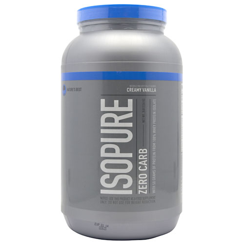

Información de Isopure :
Isopure proteína de suero contiene 26 gramos por porción,
sin adulterar 100% de proteína de suero de leche aislada. Cualquier y todas las impurezas que se
encuentran típicamente en la mayoría de las proteínas de suero de leche se han eliminado para
ofrecerle gran sabor, sin lactosa, estado del arte de carbohidratos suplemento de proteínas libre.
Isopure proteína de suero es una forma conveniente para fortificar sus comidas favoritas.
Usted sólo tiene que añadir Isopure Unflavored proteína de suero aislado directamente a comida caliente,
comida fría o bebidas. Y puesto que es prácticamente insípido, es el complemento perfecto para sus recetas
favoritas. Es 100% natural y no tiene grasa, carbohidratos, azúcares o lactosa. No tiene rellenos, sin
sabores artificiales, ni edulcorantes artificiales.
De naturaleza tiene un producto que no oculta nada a sus clientes. Queríamos que
supieras que esta comprando el mejor producto disponible en el mercado. Nuestra fuente de proteína se
identifica claramente como el 100% puro aislado de proteína de suero. No tratamos de confundir al
enumerar una mezcla de proteínas que no le dirá que tan bueno es la calidad del producto o cuánto es el concentrado de proteína de suero de leche o suero dulce o alguna
otra fuente de proteína inferior. Esto es instantáneo por lo que se puede tomar en cualquier lugar y se mezcla
fácilmente con una cuchara.
Además, Isopure es rica en aminoácidos de cadena ramificada y glutamina.
Cada porción de Isopure Contiene : 1404mg de Isoleucina, 3094mg de Leucina,
1430mg de Valina, 2,57 g de L-glutamina.
Los atletas tienden a necesitar más proteínas que las personas sedentarias para lograr el equilibrio positivo
de nitrógeno. La mayoría de recomendaciones van desde 1,5 hasta 2,0 gramos de proteína por kilogramo de peso c
orporal por día.

{kind=link}
{kind=link}
{kind=link}